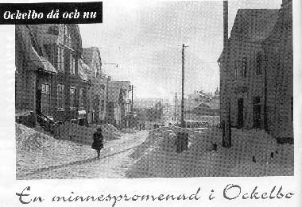

En minnespromenad i Ockelbo
av Conny Nilsson

Jag vaknar ganska tidigt en
lördagsmorgon. Sängen finns på
första våningen i huset på norra samhället som kallas för
"Bygget".
Jag känner doften av fotogen eftersom det finns en fotogenkamin
vilken är inkopplad i kakelugnen, centralvärme det finns inte.
I köket hörs vatten som spolas. Det är min mor som håller på att
ställa i ordning frukost till oss i familjen.
Under skoltiden på femtiotalet så är lördagsnöjet
under sommartid
att ibland cykla till Wijdammen och bada eller åka ner till Franksons
såg och "Tjärbäcken" och fiska. Längre fram i tiden när
skoltiden är
över och man hade börjat jobba är det ofta en promenad från
"Bygget"
och fram till Torget som gäller. Jag skall försöka återge en vandring
från nämnda "Bygget" och fram till Torget.
Jag kommer ut genom den trånga ytterdörren.
Branders radioaffär
är inte öppen än. I fönstret står en nymodighet som kallas
magnetofon,
en liten fyrkantig låda som man kan spela in ljud i. Det sker på en tunn
metalltråd. Vid jultid brukar Helge Brander spela musik som väller ut
genom högtalare som hänger utanför affären. Jag går vidare förbi det
som i dag är en pizzeria. När jag går förbi finns där en
damfrisering,
som drivs av min kompis Tommys mamma Runa Kling. På andra sidan
gatan ser jag skymten av Bengt Pettersson i blomsterhandeln.
Jag går vidare och kommer fram till Borgs möbler. Där köpte jag en gång
ett nackstöd som jag satte i den bil som vi köpt av Sven Lind.
En Opel Rekord –56 svart med vita däcksidor.
Mittemot Borgs möbler tittar jag in i den lilla
obemannade affären som
var kopplad till Shellmacken där i vägkorsningen. Där inne köpte min
far
min första stora cykel. Det var Sven Lind som ägde affären.
Jag fortsätter min vandring och möter Yngve Rytting. Han kommer från
Wibergs lilla kiosk där han som vanligt köpt kolor av olika slag och en
viss sorts tidningar. Mittemot Shellmacken ligger Konsum. Där kan man
själv fylla på mjölk i den medhavda mjölkkrukan. Vill man gå några
steg
längre på samma sida av vägen kan man köpa mjölk direkt i mejeriets
affär.
Jag fortsätter på "mejerisidan" och
kommer förbi Borgströms. Där går man
in till farbror Borgström och köper en strut med trasiga polkagrisar, för
Borgström har en karamellfabrik. När jag kommer nedanför Borgströms går
bommarna ner, "Kråktåget " kommer. Det är en mäktig
upplevelse att stå
nära bommarna, när tåget kommer stånkande uppför backen. En kraftig rök
väller ut ur skorstenen, och jag tycker att det luktar gott. Ibland händer
det att det lilla påskjutsloket inte orkar med att skjuta på tillräckligt
mycket.
Då får hela tågsättet backa tillbaka ner till "Kråkstationen"
och ta ny fart.
På andra sidan vägen, den västra sidan, ligger huset där Arbetarbladet
har sin lokalredaktion. Där jobbar Ernst Sjöström, bror till den
sedermera
berömde Henning Sjöström. Ernst Sjöström är förresten en duktig
spjut-
kastare och han brukar träna på åkern nere vid "Rö´ladan".
"Kråktåget" orkade denna gång och jag vandrar vidare.
Utanför Missionskyrkan stannar jag upp och
funderar, om jag skall åka på
ledstången som går från kyrkdörrarna och ut mot vägen.
Mittemot Missionskyrkan ligger Åbergs lager. På
väggen finns den gamla
automaten där man tidigare kunde köpa godis. I källaren på Åbergs
lager
vet jag att det finns en vedbod. Där har jag hämtat ved många gånger när
mamma jobbade hos Helga Hedberg, som drev matservering en våning upp
i det hus där Åberg och Lindwall hade sina affärer. Åberg hade en
diversebutik, men mest var det mat- och specerivaror. Hos Åberg kunde
man köpa både ett-, två- och femöres kolor. Lindwall var skomakare och
om man hade tur kunde man köpa provpar till rabatterat pris. I källaren
på
huset hade Lindgren cykelverkstad. Det hände inte så sällan, att man
gick
dit och drömmande tittade på dåtidens fartvidunder, som kallades moped.
Mittemot Lindwalls och Åbergs fanns det ytterligare en skomakare.
Han hette Åkerstedt. Honom var man lite rädd för. Han höll till i källaren
i
det huset där skräddar- Persson hade sin affär. Hos skräddar- Persson
inhandlade jag en gång en midnattsblå kostym, som Persson fick sy in
byxbenen på, så att de liknade stuprör. Det fanns ytterligare en affär
i det hus jag pratar om och det var garnboden. Den affären var jag inte
så intresserad av, för där såldes det ju mest garner.
När jag står utanför skräddar- Persson och
tittar över vägen bort mot det
stora vita huset på andra sidan Kråkbanan, kommer jag ihåg när en av
Elin
Gustavssons söner kastade en sten i huvudet på mig. Stenen var vass och
fastnade i pannbenet på mig. Jag fick då hjälp att gå till det stora
Berglundska
huset till syster Betty för att få såret omplåstrat.
Jag vandrar nu vidare mot torget och går förbi
Filadelfialokalen. När jag
kommer till nästa hus som än i dag heter Skånegården, kommer jag ihåg
att
landsfiskalen som bodde där. Han från Skåne och hette Idof Persson.
Han hade enligt rykte en taxa på "två konor" vid olika förseelser.
Det som i dag kallas Gamla Apoteket var vid min
vandring i fullt bruk. Där har
många flickor i Ockelbo lärt sig att "trilla piller". Det var
en viktig arbetsplats.
På andra våningen i huset fanns läkarmottagningen där många
personligheter
huserat som provinsialläkare. Vandringen fortsätter förbi Uplandsbanken
som i
dag är tandläkarmottagning. Jag var in dit en gång och det enda minne
jag har
kvar är att det var väldigt mörkt där inne. I nästa hus på samma
sida som
banken finns Bergmans bokhandel. Under skoltiden fanns det djärva
kamrater
som hade det stora modet att gå hos Bergmans och köpa facit till
matematiken. Det vågade aldrig jag.
Jag tittar nerför Rödakvarnsbacken och ser dåtidens
affärsgata på Norra
Samhället. På samma sida som Bergmans ligger, skoaffären med Lennart
Andersson som föreståndare. Dit in kan man gå och kanske få en kopp
kaffe
på lördagsförmiddagen. I samma hus som skoaffären ligger Johansson Järn,
och här kan man köpa allt från nubb till cyklar från sandpapper till
cement-
säckar. I källaren finns en av Ockelbos frisörer. Det är Olsson, även
kallad
"Pörsa". Jag går förbi Järnhandeln och innan jag kommer till
Strandcafét träffar
jag på en liten holk intill vägen. Det är Naemi Fahlén som har sin
korvkiosk där,
och hon har väldigt god grillad korv. Naemi var förresten glassförsäljare
på
torget innan hon började med "korveriet". Glassen tillverkade
hon själv i sitt
hus i Gäveränge och sålde från sin lilla vagn. Om jag minns rätt
minns rätt
styrdes den med ett cykelstyre. Naemi var klädd i vit rock och hade en
liten
käck vit mössa på huvudet.
Nästa hus är Strandcafét. Där kunde man fika
eller köpa nybakat bröd.
Bageriet fanns i källaren, och det var bagaren Erik Persson som drev det
hela.
Under min tid som springschas på lilla Ugglebo hämtade
jag färskt bröd varje
dag, bakat bland annat av farbror Edvin Forsling.
I cafélokalen fanns en jukebox med aktuella
skivnyheter. En skiva som jag
spelade under en tid var en med Harry Arnold. I samma hus som Strandcaféet
regerade en mäktig herre som hette Lundén. Han hade tobaksaffär och tog
emot stryk- och siffertips. Den mannen hade många åsikter och synpunkter
om mycket, och som ung hade man stor respekt för denne Lundén.
Tillbaka upp till Bergmans och en titt på Röda
Kvarnsidan. Det stora huset
norr om Röda Kvarn inrymde fotografen Cundell, rumsuthyrning och Perssons
Cykel och Sport. Hos Cundell jobbade en kamrat till mig. Han hette Gunnar
och var en hejare på att spela trummor. Perssons cykelaffär var en höjdare
varje skyltsöndag för där fanns alla de leksaker som man helst av allt
skulle
vilja ha.
Röda Kvarn var en av de två biograferna som
fanns i byn. Jag var en av dem
som fick min utkomst som chokladförsäljare där. På denna tid var det
bio
onsdag, fredag-, lördag- och söndagskvällar. På söndagarna var det
till och
med två föreställningar plus att det var matiné på söndagseftermiddagen.
Under biografen fanns det en färghandel. Det var
Zigell som drev den. Han
var en liten stadig herre med mycket pondus. Under en kort tid var jag
springschas även här. Schasjobbet var en viktig del i utvecklingen om
man
inte fortsatte i någon skola. Huset som idag inrymmer Lindwalls skor, var
under min tid Ugglebo Sundsbron eller Filialen . Här regerade
"Greven" John
Olsson, även han en man med pondus. Dåtidens Ugglebo bestod av en
speceri avdelning och en manufaktur dito. Här jobbade jag som springschas
under en kort tid, tills jag blev bortrationaliserad. Firman köpte en
trehjulig
flakmoped av märket Fram, och min skolkamrat Per-Arne Fillman fick jobba
ensam som schas, för han hade varit anställd någon vecka längre än
jag.
Sista huset innan Testeboån är där
Strandbazaren låg. Det var inget ställe
som man som kille besökte särskilt ofta för där hade man damkläder.
Till jul
kunde det förstås hända, att jag gick dit och tittade, om det fanns något
att köpa till mamma i julklapp.
Jag korsar nu Testeboån via Sundsbron och kommer
till det stora huset med
bank, urmakare och järnhandel. Banken var Handelsbanken. Den kontakt jag
fick med den banken var när jag umgicks med kamrer T. Stattins son Jan.
Utanför banken fanns och finns en avsats med ett rörstängsel. Där stod
jag
som liten och från Husqvarna inflyttad 5-åring. Från denna avsats kunde
man
se tvärs över vägen, där bland andra Reinhold Bäcklin skodde hästar.
I samma
byggnad men lite längre upp i backen hade Folke Lundqvist vulkverkstad.
Man kunde också från denna plats uppleva det stora dånet på nära håll,
när Kråktåget dundrade förbi.
På andra sidan Kråkbanan låg brandstationen
granne med badhuset. Till
detta badhus fick man som skolpojke gå någon gång ibland för att löga
sig
under Fröken Eks granskande ögon. Tillbaka till det stora huset.
Urmakaren
hette Pettersson och såg lite skojig ut när han satt med en lupp i ena
ögat
och granskade innehållet i klockorna. Järnhandlaren hette Andersson med
Axel i förnamn. Han hade en "amerikanare" i ett plåtgarage
bredvid vägen
upp till Perslunda. Även här hos Anderssons var det mycket leksaker när
det
var skyltsöndag.
Jag går nu vidare från det stora huset och uppför
backen förbi det som en
gång var stall för de hästar, som blivit skodda eller väntade på att
bli skodda.
I dag står där en annan byggnad, som när den var ny blev tätortens
badhus.
För min del besökte jag detta badhus varje lördag, och det blev som en
ritual
under många år. Det fanns ett bonussystem i detta badande. Vart tionde
bad
blev gratis så det gällde att spara badbiljetterna.
Nästa hus på vägen mot Torget, det är
nuvarande Ockelbo Kraft. Där fanns
telefonstationen, där man kunde gå in och ringa antingen lokalsamtal
eller
beställa rikssamtal. Jag vandrar vidare och kommer till det som i dag
heter
Gransäter. Där fanns bl.a. ett hus som inrymde Stinas Damshop och
barberaren Östen Sjöbergs frisering, hos vilken jag fick min på den
tiden
svallande frisyr ansad.
Jag fortsätter mot söder och tittar ner för
backen mot modisten Milred Sköld
och cykelhandlare- reparatör Sundberg. Det hus som i dagarna varit till
försäljning, Luhtman bageri och café, minner om stora wienerbröd och
goda
kakor.
Nu närmar jag mig Torget och jag kastar en blick
upp mot komministergården.
Nere i backen mot Kråkbanan låg Pressbyrån, där en skolkamrats mamma
jobbade hon hette Westbro och hennes man körde växelloket på bangården.
Nu kommer jag in på torget och står vid den
anslagstavla som en gång fanns
där infarten är i dag. Jag låter blicken svepa runt och startar där
Du&Jag
ligger i dag:
I backen ligger Lundins cafè med en liten
uteservering. På vintern hamnade
man ofelbart vid beställningsdisken, för golvet lutade ditåt, och med
snöiga
och hala fötter kunde det bara bli det resultatet. Nästa hus, idag Färghandeln,
är Knapp & Skoglund. Det är en ekiperingsaffär för både damer och
herrar.
Lite längre bort ligger då som nu Ugglebos huvudaffär men på den tiden
var
den försedd med tre ingångar från stora vägen. En ingång ledde till
manufakturen och gick man in i mitten kom man in till järnavdelningen.
Den tredje ingången ledde till speceriavdelningen. Mitt emot Ugglebo
ligger
ett stort hus med många affärer i. I bottenplanet på den södra sidan
finns
det en mjölkaffär. På den norra sidan av huset säljer Valdemar Olsson
köttvaror. Ingångarna från vägen leder till en garnaffär, en
herrfrisering med
Bert Johansson och Axel Edin och Almlöfs Damfrisering. I backen ner mot
sjön
ligger det konditori som genom åren bytt namn. Jag minnas att det hette
Halls
och senare Lindströms. "På Lindströms" blev det ofta mitt på
lördagen ett
besök för att inmundiga ett stort glas mjölk och leverpastejsmörgås
med
rödbetor.
Jag tittar vidare runt torget och blicken hamnar på
den dåvarande taxi-
stationen, en sexkantig byggnad med glasdörrar in till den väntsal som då
fanns. I källarplanet på taxistationen finns det toaletter och man får
låna
nyckeln av den som är telefonvakt på taxi.
Om man fortsätter att titta på torget utan att sätta
saker i rätt tidsordning,
kan man se: Halls korvkiosk mitt på torget, Nordins korvkiosk i ena hörnet,
Roséns korvkiosk, som låg där infarten i dag finns, Nynäsmacken i ena
hörnet,
samma mack sammanbyggd med skinnhandlare Lundhs hus, Naemi Fahlèn
med sin glassvagn och Barnensdagståget som gör uppehåll på sin väg
mot
idrottsplanen.
Här vid Torget slutar jag min minnesvandring för
denna gång. Jag har under
denna promenad åter mött många profiler som berikat Ockelbos historia.
Många av de byggnader, som jag har berättat om, finns inte längre eller
har
bytt skepnad. Ta er gärna tid till att göra en egen minnesvandring.
Det är stärkande för kropp och själ.
Conny Nilsson
Från Ockelbobygdens julstjärna 1998
Jag slutade min vandring med att stå vid "Torget" och blickade runt det samma
Jag går nu söderut, förbi skinnhandlare Lunds
fastighet och kommer fram till
Strimbolds affär. I den affären kunde man köpa klockor eller presenter
i form
av ringar, halsband eller kanske en graverad pokal till någon förtjänt
50-åring.
Själv köpte jag där en elegant Certina med tidtagningsfunktion.
Strimbold
huserade inte i hela fastigheten utan han delade den med Walins bosättnings-
affär. I den affären rådde ett visst spännande kaos och där kunde man
finna
allt från leksaker till sopborstar. Det var alltid lika trevligt att gå
in i den
affären. Sedermera blev det radioaffär av Walins lilla bod. Det var
Helge
Brander som flyttade sin radioaffär från det huset på norra samhället
i vilket
jag bodde "Bygget". Jag går vidare och hamnar mitt emellan
Strimboldshuset
och det som i dag är Tobakshörnan. Jag tittar över vägen mot öster
och där
ser jag Gulfmacken med några pumpar. Till höger om macken är det
skyltat
Oscaria, det är en av de tre skoaffärerna i byn. Om man gick in i
skobutiken
träffade man Rune och May Andersson. Det var alltid roligt att gå in där
för
att prova skor eller bara prata bort en stund. Vägg i vägg med Oscaria låg
Ockelbo Sparbank och där fanns det en kamrer som hette Curt Lundin.
Jag kommer även ihåg att Conny Nordin var verksam i banken. På andra
våningen i detta hus fanns det en inrättning som satt skräck i många
skolbarn
på den tiden, det var folktandvården. Jag kan än känna ångesten när
jag stod
och tittade ut över Bysjön (utsikten var god för detta var innan man
byggde
huset som i dag inrymmer Sportringen, tidigare Föreningsbanken och i första
läget Posten) i väntan på att bli inropad till den kvinnliga tandläkaren.
Väl inne i tandläkarstolen väntade den förhatliga borren med dess läderrems-
drift och otäcka surrande. Inte så sällan fastnade borren i de hål som
man
hade. Än värre var det när man förstod att någon tand inte längre
var
önskvärd i munnen, då kom den stora sprutan och sedan fick man åter
besöka
väntrummet med dess utsikt för att låta sprutinnehållet verka. Efter
att
tanden avlägsnats får man med hela huvudet som en otymplig klump gå ner
för trapporna och ut i friheten.
Man kommer ut på den öppna plan som tillhörde bilreparationsverkstaden
"Andersson & Persson". I källarvåningen
på verkstaden fanns det en annan
verkstad som hette "Siverts" där man tillverkade fotogenkök.
Jag fortsätter
nu från platsen mellan Walins och det som en gång hette Nauclérs. Jag går
in
till Nauclér. Det är en herrekipering, som konkurrerar med Knapp &
Skoglund
om byns klädsnobbar.
Conny Nilsson
99-10-05